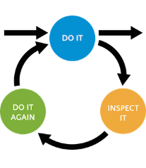

<div>	
	<!--div class="main" style="height: 850px"-->
	<div class="main">
		<span class="shadow-top"></span>
		<!-- shell -->
		<div class="shell">
			<div class="container">
				<!-- testimonial -->
				<section class="testimonial" style="height: 225px">
					
					<h2>Поддержка приложений</h2>
					<p>Долгий цикл производства — зло, тем более в сфере мобильных технологий, где операционные системы обновляются каждый год, а новые устройства появляются раз в два-три месяца. Поэтому не нужно бояться выходить в стор с простым продуктом с минимумом функционала. Работа над приложениями должна идти в формате непрерывного улучшения не долгими итерациями  и с хорошо налаженной обратной связью. Другими словами, навороченным приложение должно становиться постепенно.</p>
				</section>
				<!-- testimonial -->
				<section class="blog">
					<!-- content -->
					<div class="content">
						<div>
							<div class="cnt">
							
								<h3>Необходимость поддержки</h3>
								<p>Основная специализация нашей компании — сервисные приложения для самообслуживания клиентов финансовых, страховых и телекоммуникационных компаний. И тут есть некоторая специфика. С одной стороны, эти компании имеют свои департаменты обслуживания клиентов, которые принимают на себя первую волну вопросов и жалоб пользователей. С другой — поддержка таких приложений требует повышенного уровня предоставления услуг, который привязан к уровню сервиса компании-заказчика.</p>
							</div>
							<div class="cnt">
								<h3>Основными задачами, решаемыми после публикации приложения являются:</h3>
								<p>
									<ul>
										<li>мониторинг работоспособности;</li>
										<li>получение обратной связи от конечных пользователей продукта и оказание помощи в решении их проблем;</li>
										<li>улучшение стабильности работы и добавление новой функциональности;</li>
										<li>адаптация приложения под новые устройства и версии ОС;</li>
										<li>отслеживание степени удовлетворения бизнес-потребностей компании-заказчика;</li>
										<li>корректировка плана развития продукта.</li>
									</ul>
									И вот, как мы решаем эти задачи в Proger#team.
								</p>
							</div>
						</div>
					</div>
					<!-- end of content -->
					<div class="cl">&nbsp;</div>
				</section>
			</div>
		<!-- end of shell -->
		</div>
		<!-- end of container -->
	</div>
</div>